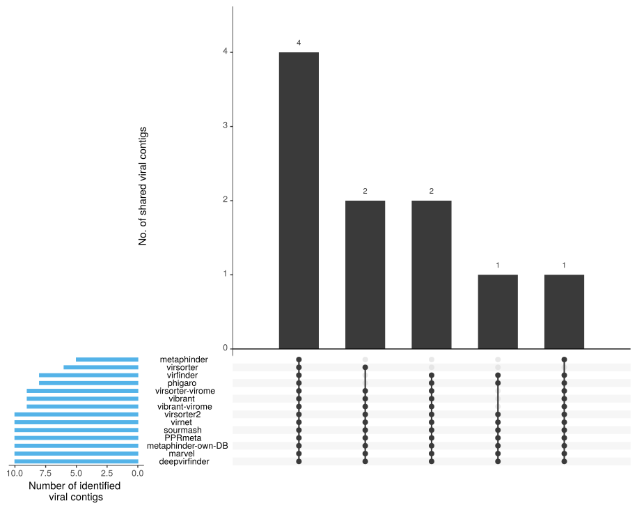
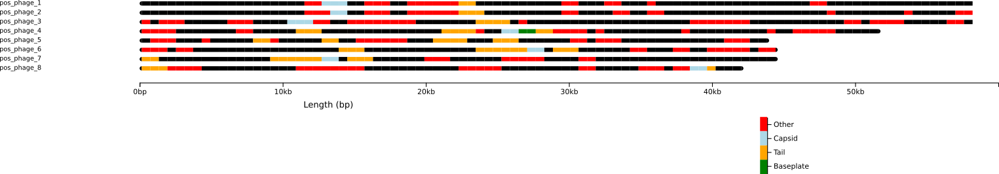
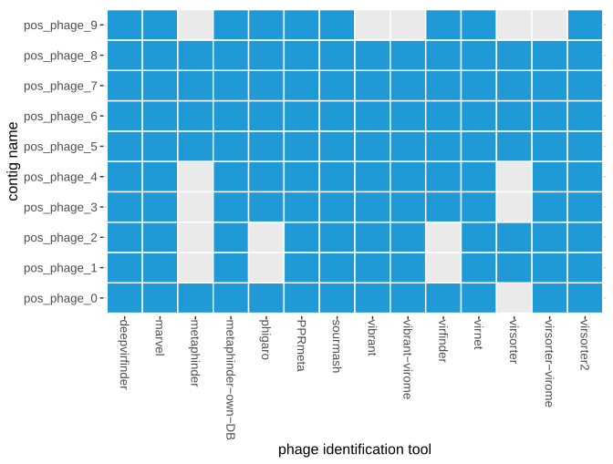

Results
Example run
We executed the following commands do perform a WtP test-run from the Terminal-section:
nextflow run phage.nf -profile smalltest,local,docker --work-dir --cores 16
WtP will create a results-folder in your current working dir (where you executed WtP) and a subfolder with the name of your input-fasta - in our case all_pos_phage
Results
literature
- contains a Citations.bib file which you can import the in your citation program to have all the citations of the programs WtP uses for its analysis
run info
execution_report.html:
- this report gives an overview over:
- distribution of resource usage for each process (CPU, Memory, Job duration)
- information about each task in the workflow
execution_timeline.html:
- this report gives you an overview over the processes execution timeline
all_pos_phage
- your actual results
Test sample result
annotation_results
- output we need for the chromomap
identified_contigs_by_tools
- contains toolname.txt files
- show the sequence-name(fasta-header) identified by the corresponding tool
phage_positive_contigs
- contains a multi-fasta-file with all the positive fasta-sequences identified by the tools you can use for further analysis
raw_data
- contains the raw output from the phage-identification-tools packed as toolname.tar.gz -file
upsetr.svg

This chart (UpSetR plot) quantifies the result-intersections of the phage identification tools, similar to a Venn diagram. The amount of positive phage-sequences identified by each tool is represented on the left barplot in blue. The dot plot shows via line connection(s) which of the tools identified the exact same positive phage sequences. The amount of these shared matches is quantified as a barplot above each corresponding dot pattern.
sample_overview-small.html, sample_overview-large.html

The graphical output of the annotation shows an overview of the individual loci of the predicted ORFs and the corresponding genes in the fasta sequences identified as phages. For a better visibility, we have chosen 4 categories: tail, capsid, baseplate, and other. This output can be used to verify the identified sequences (if the predicted sequences make sense or not). The annotation results are additionally plotted in an interactive HTML-file and are available as a file for further analysis.
For an interactive chromamap you can check out the following link: chromomap results
phage_distribution.pdf

Heatmap for phage sequences visualising the tool agreements per phage positive contig.
taxonomic_classification
- sourmash classification (all_pos_phage_tax-class.tsv) so you know the name of the phages
| contig | prediction_value | predicted_organism_name |
|---|---|---|
| pos_phage_0 | 1 | gi-1001940386-gb-KU522583.1-__Enterobacteria__phage__ECGD1,__complete__genome |
| pos_phage_1 | 1 | gi-1001941262-gb-KU647626.1-__Arthrobacter__phage__KellEzio,__complete__genome |
| pos_phage_2 | 1 | gi-1001941379-gb-KU647627.1-__Arthrobacter__phage__Kitkat,__complete__genome |
| pos_phage_3 | 1 | gi-1001941506-gb-KU647628.1-__Arthrobacter__phage__Mudcat,__complete__genome |
| pos_phage_4 | 1 | gi-1001941623-gb-KU647629.1-__Arthrobacter__phage__BarretLemon,__complete__genome |
| pos_phage_5 | 1 | gi-1001941806-gb-KU598975.1-__Staphylococcus__phage__CNPx,__complete__genome |
| pos_phage_6 | 1 | gi-1001941908-gb-KU595432.1-__Xanthomonas__phage__f20-Xaj,__complete__genome |
| pos_phage_7 | 1 | gi-1001941964-gb-KU595433.1-__Xanthomonas__phage__f30-Xaj,__complete__genome |
| pos_phage_8 | 1 | gi-1001942019-gb-KU595434.1-__Xanthomonas__phage__f29-Xaj,__complete__genome |
| pos_phage_9 | 1 | gi-1001942081-gb-KT624200.1-__Bacillus__phage__SP-15,__complete__genome |
all_pos_phage_quality_summary.tsv
- check CheckV for a detailed explanation
| contig_id | contig_length | genome_copies | gene_count | viral_genes | host_genes | checkv_quality | miuvig_quality | completeness | completeness_method | contamination | provirus |
|---|---|---|---|---|---|---|---|---|---|---|---|
| pos_phage_0 | 146647 | 1 | 243 | 141 | 1 | High-quality | High-quality | 97.03 | AAI-based | 0 | No |
| pos_phage_1 | 58871 | 1 | 97 | 21 | 0 | High-quality | High-quality | 100 | AAI-based | 0 | No |
| pos_phage_2 | 58560 | 1 | 95 | 20 | 0 | High-quality | High-quality | 99.47 | AAI-based | 0 | No |
| pos_phage_3 | 59443 | 1 | 90 | 52 | 0 | High-quality | High-quality | 100 | AAI-based | 0 | No |
| pos_phage_4 | 51290 | 1 | 74 | 44 | 0 | High-quality | High-quality | 100 | AAI-based | 0 | No |
| pos_phage_5 | 43293 | 1 | 69 | 55 | 0 | High-quality | High-quality | 100 | AAI-based | 0 | No |
| pos_phage_6 | 43851 | 1 | 53 | 30 | 0 | High-quality | High-quality | 98.71 | AAI-based | 0 | No |
| pos_phage_7 | 44262 | 1 | 54 | 31 | 0 | High-quality | High-quality | 99.64 | AAI-based | 0 | No |
| pos_phage_8 | 41865 | 1 | 60 | 57 | 0 | High-quality | High-quality | 97.29 | AAI-based | 0 | No |
| pos_phage_9 | 221908 | 1 | 310 | 48 | 9 | High-quality | High-quality | 100 | AAI-based | 0 | No |